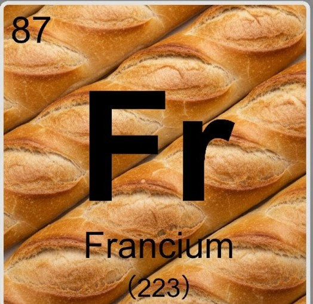
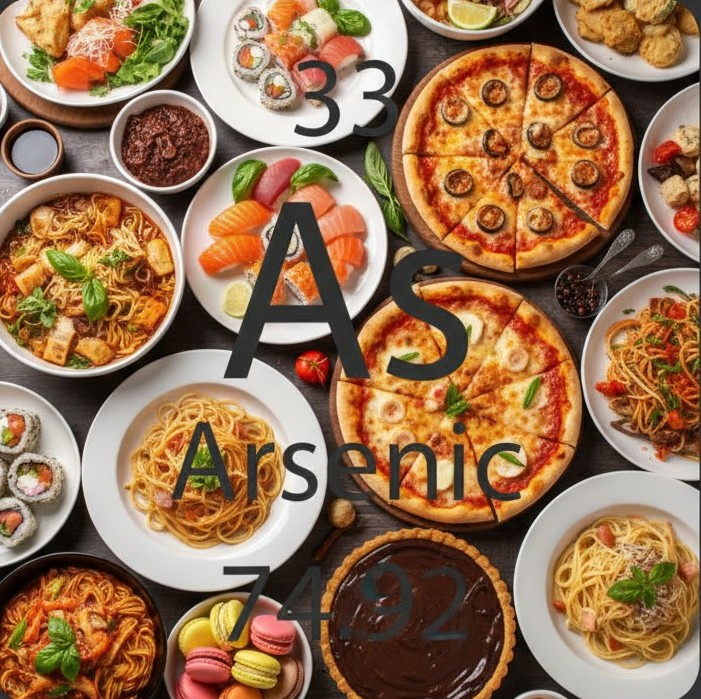
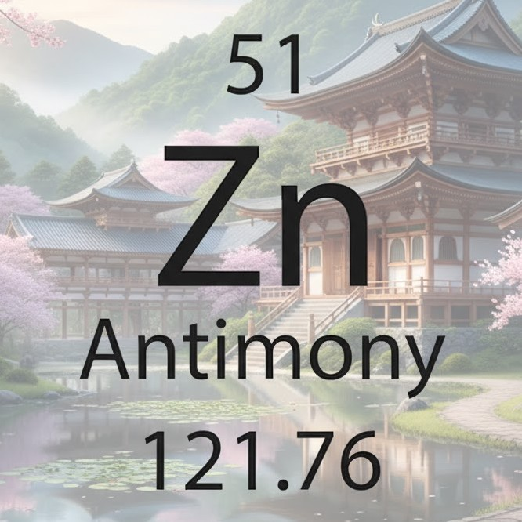
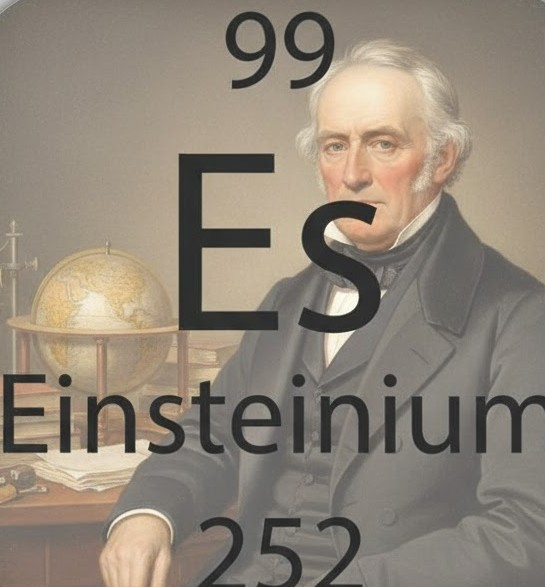

Nos Destinations Atomiques

Expédition Francium
Une plongée instable mais exaltante au cœur de l'élément le plus rare.
Prix : 5000 Quarks | Durée : 22 min
Pour les amateurs de sensations fortes :
- Instabilité radioactive unique
- Souvenirs explosifs

Croisière Arsenic
Découvrez la beauté toxique de ce métalloïde fascinant.
Prix : 3500 Quarks | Durée : 3 jours
Pour les historiens :
- Un élément légendaire
- Couleurs métalliques uniques

Séjour Antimoine
Explorez les structures cristallines de cet élément millénaire.
Prix : 2800 Quarks | Durée : 1 semaine
Pour les familles :
- Observation des cristaux
- Calme et stabilité

Escale Einsteinium
Un voyage vers l'élément synthétique ultime qui brille dans le noir.
Prix : 6000 Quarks | Durée : 1 jour
Pour les visionnaires :
- Hommage au génie
- Lueur bleue radioactive